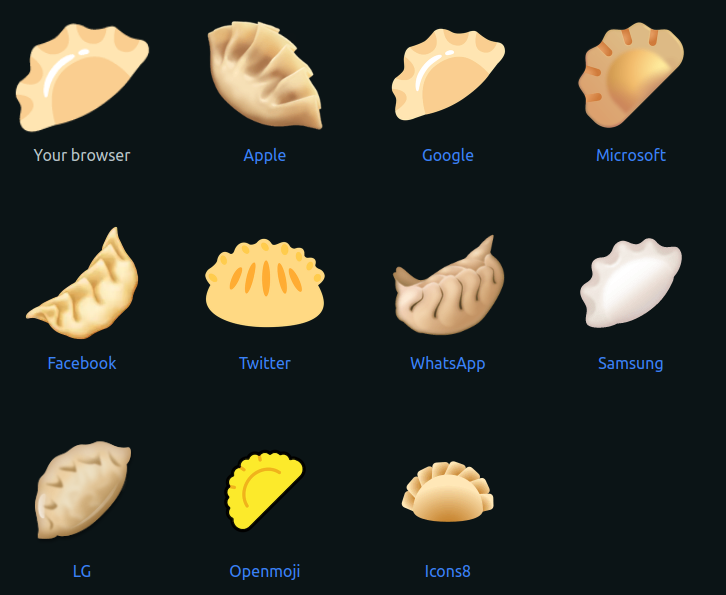

The Completest Guide to Empanadas
Or whatever fits in 5 minutes, whatever happens first.
This slide is here just to appreciate the beauty of empanadas
What is/is not an Empanada
- It's is NOT a dumpling (even though Slack shows the same emoji for :dumpling: and :empanada:)
- It is amazing
- It is a dough disc filled with whatever you want (kinda like a dumpling...)
- It's usually cooked in the oven or fried (not steamed, I told you it's not a dumpling!)
- It's not a Calzone (it's like a mini version of that)
- We also have what we call Arab Empanadas, but the real name is Fatay (it's a gray area)
- G) All of the above
What can you put inside
- Basically: anything you want, and I mean ANYTHING
- The most common are: ground meat (you can mix it with whatever), meat cut with a knife, chicken, humita (corn), ham and cheese, chard with white sauce, onion and cheese
- You can also put things OUTSIDE!! (usually just painted with egg to make them shiny)
The Repulgue
The typical repulgue
There are also some common ones
It's common to use different shapes and repulgues to differenciate the content of the empanada
The "I don't know how to make a repulgue" techniques
The "Ain't nobody has time for that" technique
Some places are lazy and instead of doing different repulgues they just stamp some code to know what's inside
Random Facts
You can create Dino-Empanadas
Empanada in a jar controversy
One time, a restaurant in a fancy area of Buenos Aires served this `Empanada in a jar`... it went viral because it's just ridiculos and pretentious and everybody hated it
Size
There are typically 3 sizes of empanadas: copetín (small), normal, rotisera (big)
The empanada costume
Emojis
This thing doesn't work
Tres Empanadas